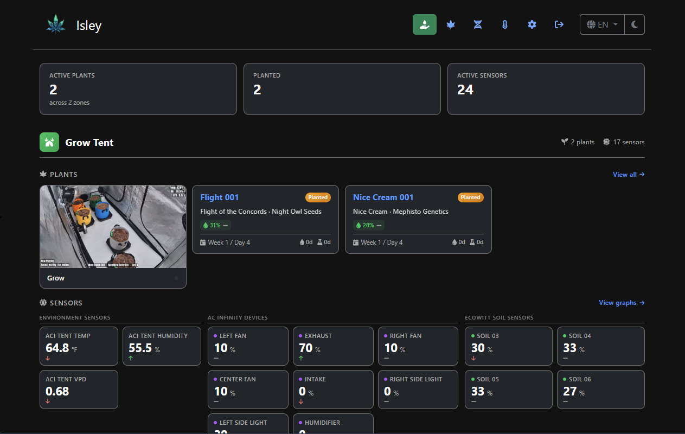
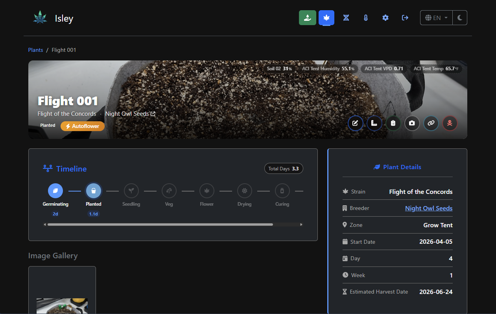
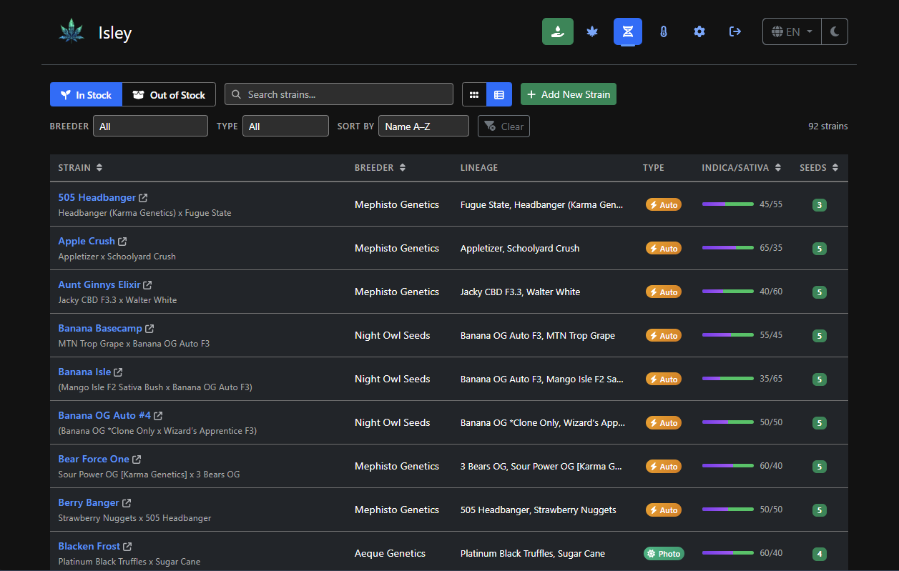
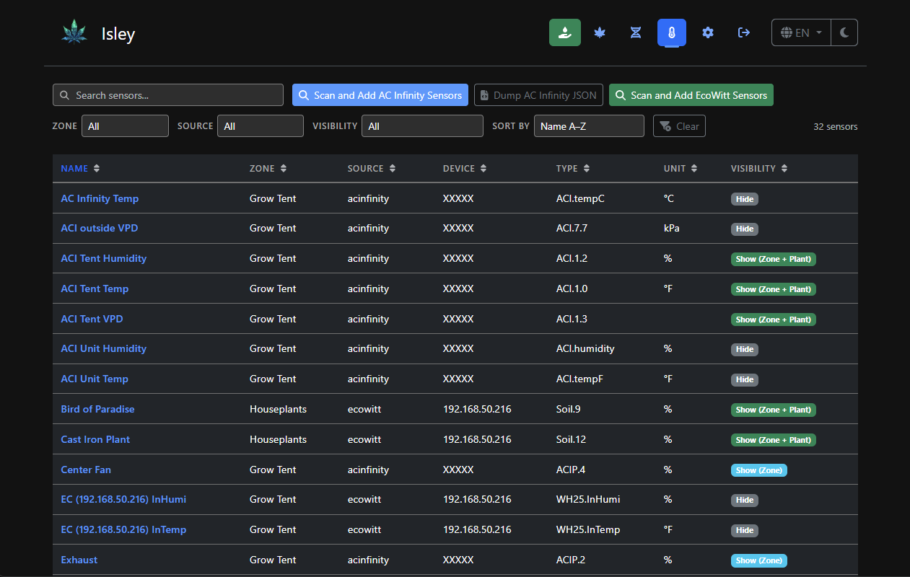
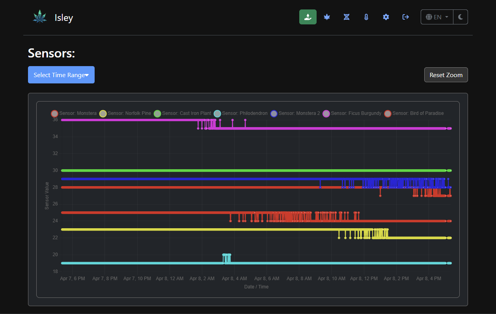

Self-Hosted Cannabis Grow Journal
Track, trend, and elevate your grow — all in one place. Environmental monitoring, seed inventory, harvest tracking, and more.
One self-hosted tool to replace the vendor apps, spreadsheets, and notepads
Track plant growth, watering, and feeding with custom activity types. Timestamped activity logs per plant.
Real-time sensor data from AC Infinity and EcoWitt, plus a custom HTTP ingest API for any hardware.
Manage strains, breeders, and seed stock with Indica/Sativa ratios, lineage, and autoflower tracking.
Visualize sensor data over time with configurable retention windows and interactive zoom.
Record harvest dates, yields, and full cycle times. Compare results across grows.
Attach photos with captions, overlays, and watermarks. Periodic snapshots from camera streams via FFmpeg.
Cross-database portable backups with optional image bundling. Migrate between SQLite and PostgreSQL.
Available in English, German, Spanish, and French. Contribute translations on GitHub.
Optional read-only access for visitors. HTTP API for custom sensors, OBS overlays, and home automation.
A few views from the app





Deploy with Docker Compose — PostgreSQL recommended for production
# docker-compose.yml version: '3.8' services: isley: image: dwot/isley:latest ports: - "8080:8080" environment: - ISLEY_DB_DRIVER=postgres - ISLEY_DB_HOST=postgres - ISLEY_DB_PORT=5432 - ISLEY_DB_USER=isley - ISLEY_DB_PASSWORD=supersecret - ISLEY_DB_NAME=isleydb depends_on: - postgres volumes: - isley-uploads:/app/uploads postgres: image: postgres:16.8-alpine environment: - POSTGRES_DB=isleydb - POSTGRES_USER=isley - POSTGRES_PASSWORD=supersecret volumes: - postgres-data:/var/lib/postgresql/data volumes: postgres-data: isley-uploads:
Run docker-compose up -d then visit http://localhost:8080
Default login: admin / isley — you'll be prompted to change your password.
Connect your hardware or push data from any device
Any device that can make an HTTP POST can push sensor data into Isley.